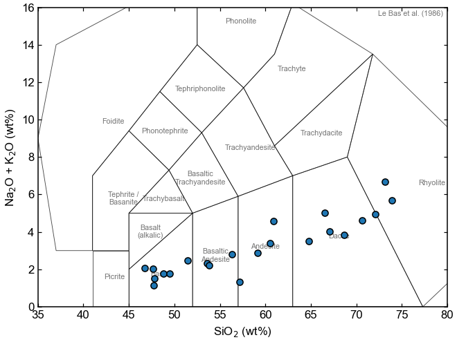
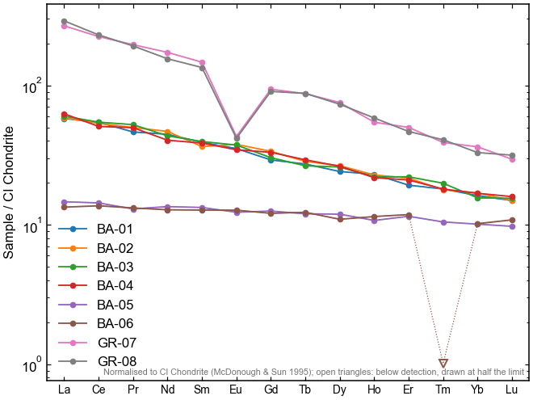
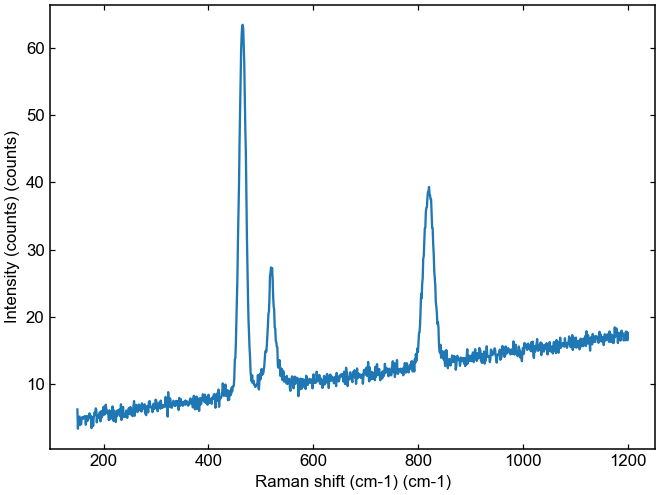

From microprobe data to publication figures, in one app
PlotBench brings scientific graphing and peak fitting together with petrology, mineral chemistry, thermobarometry and U-Pb geochronology. No coding, and no Python or R to install.

Everything from raw analyses to the final figure
Earth scientists often pass their data through five or six programs to get one figure. PlotBench does it all in one workbook, and writes every result back into the sheet as a new column.
Graphing
91 plot types, journal-sized export to PNG, TIFF, PDF, SVG and EPS with a true-size preview, and multi-panel figures with (a), (b), (c) labels.
Geochemistry
TAS, AFM, Harker, Frost and Shand diagrams, Pearce granite and basalt discrimination, spider diagrams, ternary plots and the CIPW norm.
Mineral chemistry
Mineral formulae from oxide wt%, Fe3+ by charge balance (Droop 1987), and amphibole, pyroxene and feldspar classification.
Thermobarometry
45 methods including Putirka (2008), Holland & Blundy (1994), Ti-in-zircon, Ti-in-quartz, Ghiorso & Evans (2008) Fe-Ti oxides and the Loucks et al. (2020) zircon oxybarometer, plus a coupled P-T solver. Rows outside a method's calibration range are flagged, and a Monte Carlo option gives 1σ uncertainties.
Geochronology
Wetherill and Tera-Wasserburg concordia, concordia and weighted-mean ages, York isochrons, common-Pb correction, discordance filtering, and detrital KDE.
Spectra and fitting
A Peak Analyzer for Raman, FTIR and XRD with baselines and Gaussian, Lorentzian, pseudo-Voigt and Voigt peaks; 72 nonlinear fit models.
Statistics
t-tests, ANOVA and post-hoc tests, non-parametric tests, PCA, clustering, discriminant analysis, regression and mixed models.
Built for real data
Columns such as SiO2, FeOt, La or 207Pb/235U are recognised automatically, and masked rows drop out of every plot and calculation.
Easy to learn
A built-in manual with screenshots, example data sets that open with a finished graph, Ctrl+K command search, and light and dark themes.
Publication-ready, straight out of the box
Every figure here was made from an example data set that ships with the app, with no manual styling.







One app instead of five
Each of these tools is excellent at what it was built for. PlotBench brings their main jobs into one place, with no coding.
| Software | Interface | Geochem diagrams | Thermobarometry | U-Pb geochronology | Graphing & peak fitting | Cost |
|---|---|---|---|---|---|---|
| PlotBench | Desktop app | Yes | 45 methods | Yes | Yes | Free, open source |
| OriginPro | Desktop app | Add-ons | No | No | The benchmark | Commercial |
| GCDkit | R with a GUI | Extensive | Saturation only | No | Limited | Free, needs R |
| pyrolite | Python library | Yes | No | No | Through code | Free, needs Python |
| Thermobar | Python library | Limited | Largest library | No | Through code | Free, needs Python |
| IsoplotR | Web app or R | No | No | The reference | No | Free |
| LabPlot / Veusz | Desktop app | No | No | No | Yes | Free, open source |
For specialised work, such as full geochronology data reduction or the widest range of mineral-melt calibrations, IsoplotR and Thermobar go further than PlotBench and are worth using alongside it.
Get PlotBench 1.32.0
Free for everyone, under the MIT License. Older versions are on the Releases page.
./PlotBench, or ./install.sh for a menu entry.What's new in 1.32.0
Released 2026-11-21. The same notes open in PlotBench after the update, and under Help > What's New.
- Thermobarometry and the Coupled P-T Solver: the method lists are grouped by mineral or assemblage and have a search box; methods whose inputs are not all in the sheet are grey, and a line under the list says which inputs were found or are missing.
- Coupled P-T Solver draws a P-T diagram: the solutions and, for up to 12 samples, the thermometer curve T(P), the barometer curve P(T) and (with Monte Carlo) the 1-sigma ellipse; the curves are in a new sheet "P-T curves".
- Fe-Ti oxides: two diagrams, T against log fO2 with the MH and FMQ (Frost 1991) and NNO (O'Neill & Pownceby 1993) buffers, and log(Mg/Mn) of magnetite against ilmenite with the Bacon & Hirschmann (1988) equilibrium band. Also in the Petrology menu.
- Compare Thermometers: 2 to 4 thermometers on the same rows, with their differences from the first and a summary report.
- Oxide headers with a leading unit from microprobe software (Wt% SiO2, Mass% FeO) are recognised.
- Graph templates for journal columns (Nature, Elsevier, Springer, Wiley/AGU): exact width, Arial 7 pt, thin lines, 600 dpi.
- View > Graph Inspector (Ctrl+Shift+I): a panel with the main settings of the graph in front, applied as they are changed.
- View > Dark Graph Canvas on Screen: graphs on a dark background in the dark theme; exported files stay white.
- The graph tools bar shows only while a graph or layout is in front (View menu to keep it always).
- Window > Side by Side (Ctrl+Alt+S): the two windows used last next to each other, e.g. a sheet and its graph.
- The interface uses the system font on macOS and Linux (SF Pro, Noto Sans, Ubuntu) instead of falling back to Arial.
- Coupled P-T solver: every step after the first goes half way (damping from the start), and rows that still do not settle are solved by bracketing P(T(p)) = p between 0.1 and 80 kbar and bisecting.
- Coupled P-T Monte Carlo also returns the T-P correlation; the 1-sigma ellipses on the P-T diagram are tilted by it.
- The Graph Inspector follows undo, redo, Graph Properties and edits on the canvas.
- Dark graph canvas: black scatter points turn light too (colour-mapped points keep their colours).
- Method search: a search with no match says so instead of silently showing every method; found/missing text is readable in dark mode.
- P-T diagram reference lines (on by default; also Petrology > Add P-T Reference Lines for any graph): the Al2SiO5 reactions and triple point of Pattison (1992; 550 C, 4.5 kbar) and geotherms of 10, 20 and 30 C/km.
- Curve fits with a residual plot also make a layout page with the residuals under the fit.
- Graph Inspector in folding sections: Labels; Axes and limits (from, to, scale, minor ticks); Look; Curves and colours (a swatch per curve); Layers and more.
- Side by Side: dragging the inner edge of one window moves the other with it.
- Search Commands (Ctrl+K): the commands used last come first; matches without punctuation (feti, upb) and by initials (cpt).
- Formula bar: typing a column name offers its column range (e.g. SiO2 -> B:B).
- Digitizer: rotated or skewed scans are read correctly (calibration from both axis directions).
- Coupled P-T solver: the bisection rescue keeps a result only where P(T(p)) really equals p, so a pole is not taken for a root.
- Works with NumPy 2 (np.trapz was removed there).
- The Bacon & Hirschmann (1988) envelope has one source in the code; buffer curves never start below -200 C.
- Cell formulas as in Excel: typing after = lists the matching functions under the cell with their arguments (Tab or Enter puts one in), an argument hint inside the brackets, F4 cycles $ on a reference, and Enter closes open brackets.
- Point at cells while typing a formula: click for a cell, drag for a range, Ctrl+click to add another, click on another sheet for a reference to it; every reference is outlined on the grid in its own colour.
- Formula help: the function list and the argument hint open above the cell when there is no room below and stay on the screen; the hint stays up while cells are picked; brackets and commas inside a 'quoted sheet name' are not counted.
- Fe-Ti oxide thermometer: a pair whose model energy is undefined at some temperatures of the search grid no longer fails; the solution is found on the valid part of the range.
- Coupled P-T solver: steep thermometer-barometer pairs that used to oscillate and come out blank now settle (the iteration is damped after five steps).
- Coupled P-T solver: a new column "P-T in calibration range" checks the solved T and P against both calibrations, as the single methods do.
- Coupled P-T solver Monte Carlo: an absolute error for the liquid H2O content (H2O ± wt%) can be set; before, H2O carried only the relative error of the analyses, which made the T and P uncertainty of hydrous Putirka pairs too small.
- Help > What's New also finds CHANGELOG.md next to the program.
- Send to Word / PowerPoint opens the file on macOS and Linux too, not only on Windows.
- What's New and the tour use the theme's colours, so the secondary text is readable in dark mode.
Earlier versions
The last 5 earlier releases, each with its downloads and notes. Every release is also on the GitHub Releases page and archived on Zenodo.
1.31.02026-11-19
Windows macOS (Apple silicon) macOS (Intel) Linux
- Drawn shapes can be edited on the graph. Double-click a shape (or right-click > Edit handles / nodes): drag the ends of a line or arrow; resize a rectangle or ellipse with eight handles and turn it with the round handle; drag the nodes of a polygon or region, double-click or Ctrl+click the outline to add a node, Delete to remove one, and turn or move the whole shape. Shift snaps angles to 15 degrees and keeps proportions on a corner. Enter, Esc or a click outside ends editing; the whole session is one undo step.
- The Region tool is drawn by clicking nodes: straight lines join the clicks and follow the mouse, and on finishing the outline becomes a smooth closed curve through the nodes (Shape properties has a Smooth curve switch). Click the first node, double-click or press Enter to finish; Backspace or a right-click takes the last node back; Esc cancels. The Polygon tool works the same way with straight sides.
- Rectangles and ellipses have an angle; the turn is made on screen, so the shape keeps its form on any axis scales.
- Right-click a shape for a menu: Edit handles / nodes, Shape properties, bring in front or send behind the data, Delete.
- The Start page opens with three large choices: Open an example, Import my data, Start empty. A new Examples tab lists the 29 example data sets with a line on each. Until the first graph is made, the status bar says how to make one.
- View > Simple Menus (on for a new installation, off after an update) leaves about 120 rarely used commands out of the menus. Search Commands (Ctrl+K) still finds and runs all of them, and each shortened menu ends in "Show all commands".
- A Plot row above every worksheet draws the selected columns in one click (Scatter, Line, Line + Symbol, Column, Histogram, Box, More...). In the Plot Gallery, plot types that need more columns than are selected are grey and say how many they need.
- The status bar shows count, mean, SD, sum, minimum and maximum of the selected cells.
- Row filter: right-click a column header > Filter rows..., with a condition such as SiO2 > 45 or Rock == "basalt". Rows that fail are masked, so they leave the graphs and analyses; the filter is shown above the sheet, saved with the project and undoable.
- Click an axis or the legend on a graph: its settings (range, scale, grid, ticks; legend place and frame) take the format row.
- The graph side panel has an Objects list: hide, edit or delete every shape, text, line and added data series.
- Graph > Copy / Paste Format: copy one graph's look and paste all of it, the colours only or the fonts only into another.
- Thermobarometry columns recalculate when their inputs change (header mark: circular arrow). Monte Carlo runs can be cancelled.
- Unsaved work is written to a recovery copy every three minutes and offered at the next start after a crash.
- Help > Quick Tour (one minute), also on the Start page. A new result column is scrolled into view and tinted for a moment.
- Ribbon buttons have hand-written labels (for example Histogram, Fit a curve, Fe-Ti oxides instead of cut-off words). The nonlinear fit command is named "Fit a Curve"; searching for the old words still finds it.
- Layers: Graph > Layers adds more data to a graph with its own Y axis on the right, its own X axis on the top, or both, from any sheet; a manager edits, hides, reorders and removes layers. Layer curves join the legend and the format row.
- One undo history: Edit > Undo and Redo follow the order of the changes across sheets, matrices and graphs.
- File > Send to Word / PowerPoint: the active graph or all graphs as a .docx (one per page) or .pptx (one per slide).
- Export presets: named export settings in the export dialog.
- Worksheet > Copy Analyses to Other Sheets repeats column formulas and thermobarometry columns in other sheets.
- Coupled P-T Solver: Monte Carlo 1-sigma columns for T and P, with progress and Cancel.
- 28 more fit functions (72 in all), among them Birch-Murnaghan and Vinet equations of state, Vogel-Fulcher-Tammann, Avrami, erfc diffusion profile, Pearson VII, exponentially modified Gaussian, two-peak and sloping-baseline peaks, Richards growth.
- New plot types: 3D Line (path), 3D Bars, 3D Vectors.
- Calibration-range flags for 20 more methods (36 of 45 now), each read from its paper: Zr-in-rutile (Watson et al. 2006; Ferry & Watson 2007), Nimis & Taylor (2000), Al-in-hornblende (Hammarstrom & Zen 1986; Hollister et al. 1987), garnet- clinopyroxene (Ellis & Green 1979), two-pyroxene (Wells 1977; Wood & Banno 1973), garnet-orthopyroxene (Harley & Green 1982; Nickel & Green 1985), zircon saturation (Boehnke et al. 2013), zircon oxybarometer (Loucks et al. 2020), and Putirka (2008) Eqs 13, 15, 19 (Beattie 1993), 22 (Putirka et al. 2007), 31, 32a and 33. The other nine Putirka (2008) equations state no range.
- Text files over 5 MB import with a progress window and Cancel.
- Graph Properties: the Axes tab shows six settings; ticks, grid and axis breaks are under More options.
- A command for a graph (or a sheet) goes to the one used last when another kind of window is in front; when there is none, the message offers the next step.
- Fixes from the 1.31.0 audit: the exponentially modified Gaussian fit no longer returns NaN for nearly symmetric peaks; a layer with no Y column says so instead of stopping the redraw; column layers keep their width when X values repeat; Word, PowerPoint and clipboard images no longer include the outline of a selected text or shape handles, and a file open in Word gives a message; a right-click with the line, arrow, rectangle or circle tool puts the tool down instead of starting a shape.
- The text format bar takes the place of the curve format bar while a text is selected, so a graph has one format row, not two.
- The graph side panel opens with Draw, Add, Arrange, Analyse and Output folded. Ticked boxes show a tick mark.
1.30.32026-11-18
Windows macOS (Apple silicon) macOS (Intel) Linux
- The words box of the text format bar shows formatting as it will look (bold, italic, subscript, superscript) instead of codes. Select any letters in it and press B, I, superscript, subscript or stacked to format only those letters; press again to undo it. With nothing selected, B and I act on the whole text.
- Stacked sub- and superscript: select e.g. "2,3+" (or two characters); the first part becomes the subscript, the second the superscript.
- The Greek button is now a symbol picker (Ω) with 464 symbols in 11 groups: Greek, maths, relations, arrows, superscript and subscript digits, units, chemistry, shapes, numbers and fractions, accented letters, punctuation. Ctrl+G still turns selected Latin letters into Greek.
- Bold and italic parts of a text use the graph's font; symbols missing from that font are taken from DejaVu Sans or STIX.
- The Curves list of the graph side panel no longer squeezes its rows when a graph has many curves.
- Fixes from the 1.30.2 audit: the Edit text prompt showed a box instead of \b; words typed for a text annotation are kept as an edit of the graph (so Reset brings back the original words) and count as one undo step; the graph title and axis titles typed in the text bar and in Graph Properties are the same field, so neither hides the other; the selection outline follows a dragged text; the calibration-range check uses a temperature column on a one-row sheet too.
1.30.22026-11-18
Windows macOS (Apple silicon) macOS (Intel) Linux
- Every text of a graph can be formatted on its own: title, axis titles, tick labels (per axis), legend title and entries, field names and other plot texts, annotations, colour-bar titles. Click a text to select it (red outline), then use the new text format bar under the curve bar: words, font, size, bold, italic, superscript, subscript, stacked sub- and superscript, Greek letters, larger and smaller, colour, orientation (angle) and reset. Double-click a text to edit its words. Keys in the words field: Ctrl+B, Ctrl+I, Ctrl+= (subscript), Ctrl+Shift+= (superscript), Ctrl+- (stacked), Ctrl+G (Greek), Ctrl+Shift+> and < (size). Formats are saved with the project, undoable, and kept in exported figures.
- The left (graph tools) toolbar fits in one column: the drawing tools (line, arrow, rectangle, circle, polygon, freehand) share one button, and so do the add-to-graph tools (text, arrow, reference line, confidence ellipse, zoom inset). A click repeats the last tool used; the small arrow beside the button lists the others. Icons on that bar are slightly smaller.
- Thermobarometers return a blank instead of -273 C or infinity when an input that goes into a logarithm is zero.
- LaTeX export blanks only masked cells, not whole rows, and writes 5 rather than 5.000 for whole numbers.
- Calibration-range flags use the temperature column when one is chosen; Monte Carlo treats a temperature column as an absolute error in degrees (new T +- input) and lists only the P or T errors that the method uses.
- Cell formulas: powers are computed in floating point, so =10^(1000+1) gives #NUM! at once; FACT(TRUE) gives #NUM!.
- Opening a project right after a graph redraw no longer crashes.
1.30.12026-11-18
Windows macOS (Apple silicon) macOS (Intel) Linux
- Thermobarometry: methods with a published calibration domain add a column flagging rows outside it (or out of equilibrium, for the KD tests), and an optional Monte Carlo 1σ column propagates the analytical error of every measured input (and of P, if given).
VALIDATION.md(fromvalidation/validate.py) benchmarks the calculations against worked examples printed in the papers and against published experiments (Evans et al. 2006 Fe-Ti oxides; Brey et al. 1990 garnet peridotites).- Opening a project is all or nothing: if any part of the new project fails to build, the previous session is put back as it was.
- LaTeX export: numbers from 0.001 to 1,000,000 in plain notation (12450, not 1.245e+04), masked rows left out, and labels such as SpotA1 or (yErr-) no longer typeset as formulae.
- Common-Pb correction: corrected 207Pb*/235U only for the 204Pb and 208Pb methods (the 207Pb method assumes concordance); negative corrected ratios are left blank.
- Zircon oxybarometer: zero or blank Ce, U or Ti gives a blank instead of infinity. Graph side-panel arrows follow a theme change.
- Opening a project now asks to save unsaved work first (Save / Discard / Cancel).
- A project file is fully read and checked before the open windows are closed, so a damaged file no longer costs the current session. Project files are limited to 4 GB of data and 10,000 parts.
- Text labels such as NA, NULL or nan in a text column stay text after saving and reopening.
- Importing datasets with the same name from different HDF5/NetCDF groups keeps all of them.
- FACT() refuses arguments above 170 (the float limit) instead of freezing; cell formulas are limited to 2,000 characters.
- Release builds run every analysis test and the new regression tests; a test workflow runs on every push.
- macOS app is ad-hoc signed and the disk image includes first-start instructions.
- Website: download links pinned to the release, skip link, keyboard focus, reduced-motion support, clearer install notes.
- Corrected the licence of the pyrolite reference data (MIT) and added THIRD_PARTY_NOTICES.md and SECURITY.md.
Using PlotBench in a paper?
Tiwari, K. (2026). PlotBench: a desktop workbench for scientific graphing, petrology, thermobarometry and geochronology [Computer software]. Zenodo. https://doi.org/10.5281/zenodo.24330955
The DOI covers all versions and always resolves to the newest release. GitHub's Cite this repository button gives BibTeX; please also cite the papers behind the diagrams and calculations you use; the app names each one. Bug reports and ideas are welcome. The validation table shows the benchmarks against published values, and the changelog lists what changed in each version.